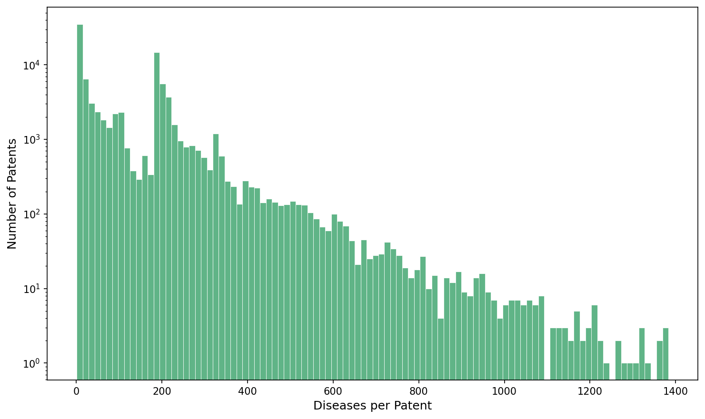

Patent Analysis Results

Figure 1: Distribution of diseases per patent after filtering. Shows the frequency distribution of how many diseases are associated with each patent in the filtered dataset.

Figure 2: Distribution of genes per patent after filtering. Displays the number of genes referenced in each patent, helping identify patents with broad vs. specific genetic focus.
About This Analysis
This analysis examines the relationship between genetic variants, diseases, and patent filings. The filtering process removes low-quality entries and focuses on patents with clear disease-gene associations.